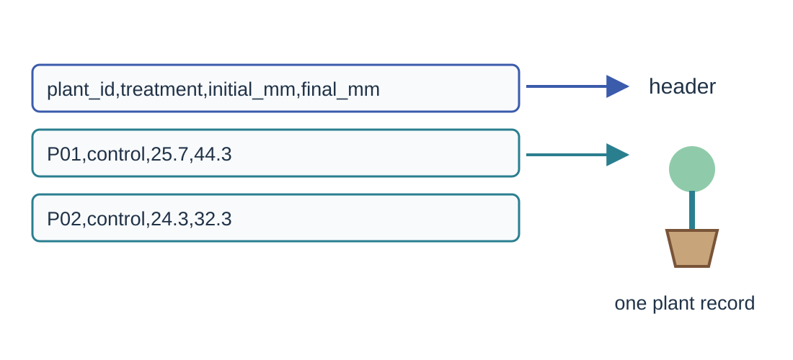
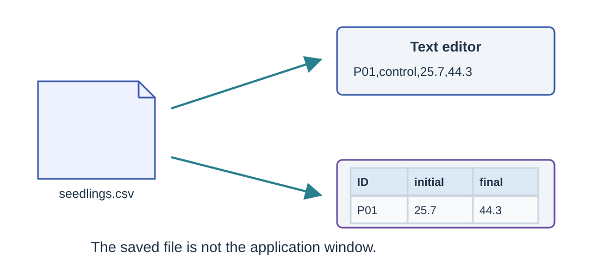
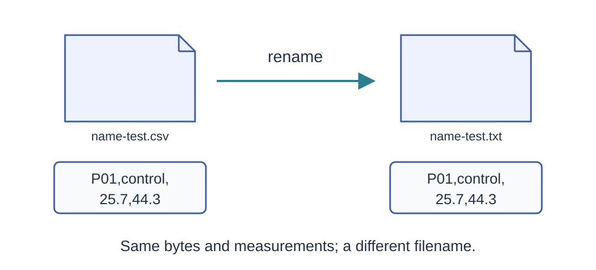
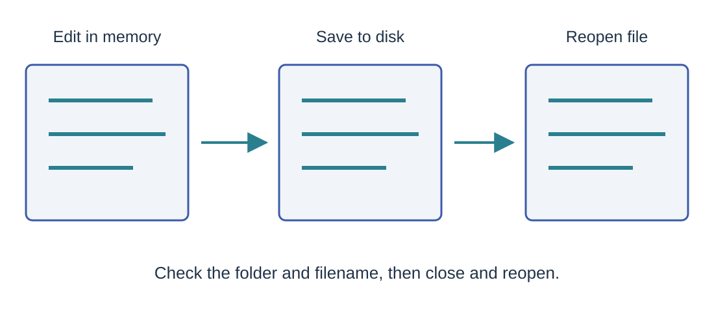

Every measurement you take in a lab course, a project, or a thesis ends up as a file: an instrument export, a spreadsheet from a colleague, a photo of a gel. Before any statistics, you must be able to find that file, keep the original safe, and get back to your own work tomorrow.
A file is saved information with a name and a location. An application only displays or changes it.
A file’s full name (including its extension) and its folder together say what it is and where it is.
The raw data stay unchanged; you work on a copy and you know which copy.
“Saved” means you can close everything and reopen it — not that a window still shows it.
This is a concept and practice day with no programming. Everything later in the course — the terminal, R, reports — assumes these habits.
What goes wrong without these habits
Situations that are common in student lab work:
What happened
What it cost
The instrument export was “somewhere in Downloads” and was later cleaned away
The measurements had to be repeated
Values were corrected by typing over the original spreadsheet
Nobody could check what the instrument actually recorded
A report was rebuilt from results (2).csv, an older copy
The figure and the text disagreed
A table was sent as a screenshot
The receiver had to retype every number
report.docx was renamed report.pdf
The file no longer opened; nothing had been converted
Each row is fixed by one habit from today. None of them needs programming.
Today’s data: one row per seedling
Our (simulated) study: 24 seedlings, each in its own pot. 12 treated, 12 control, assigned at random. Each plant was measured at the start and the end.
The file data/seedlings.csv stores this as a table:
The header names the fields: plant_id, treatment, initial_mm, final_mm.
Each record (row) describes one plant.
P01 grew from 25.7 mm to 44.3 mm — an increase of 44.3 − 25.7 = 18.6 mm, not 44.3 mm.
Units and meanings come from the data dictionary, not from the commas.

The header labels fields while a record describes one plant.
A file is not the window showing it
The file is what is saved on disk. An application opens it and shows a view.
One CSV can be shown as plain text (a text editor) or as a grid (a spreadsheet). The saved content is the same comma-separated text.
Closing the application does not delete the file. Deleting the file is a separate action.
The format (CSV) is not the application (Excel). R, a text editor, and Excel can all read the same CSV.

One saved CSV can be read as text or as a table in different applications.
From download to a folder you can find again
Download the course ZIP with the browser.
Show it in the file manager (File Explorer or Finder) — note the folder, usually Downloads.
Extract the whole archive, then move the extracted folder to Documents.
Open files from the extracted folder, not from a preview inside the ZIP.
Find data/seedlings.csv by opening folders, not via “recent files”.
A download that you cannot locate afterwards is not yet usable data.
The project contains data, output, and reports folders; seedlings.csv is inside data.
Read the whole filename
Name
Content
seedlings.csv
Text table of measurements
day01-notes.txt
Your plain-text note
report.Rmd
Source for a future report
The extension (.csv, .txt) is part of the name. It tells applications what to expect.
Many systems hide extensions by default. Turn them on, or notes.txt can silently become notes.txt.rtf.
The base name and .csv extension play different roles in seedlings-practice.csv.
Renaming does not convert the contents
Renaming seedlings-practice.csv to name-test.txt changes only the label.
The commas and measurements inside are identical.
To change a format you must export or convert with a program that rewrites the content.
An extension is a clue, not proof of what is inside. A wrong extension makes a file misleading.
Experiment only on a copy, then restore the informative name.

A CSV and the same text renamed .txt contain identical records.
Keep the raw data untouched
The original file is your evidence: it is what the instrument or the notebook recorded.
Copy data/seedlings.csv to output/seedlings-practice.csv and edit only the copy.
Two locations, two names: you always know which file is the source.
If an analysis goes wrong, you can start again from the original. If the original is changed, you cannot.
Copying the raw CSV into output creates a separate practice file while retaining the original.
Saved means: close everything, then reopen
Write a sentence in a plain-text editor.
Save as day01-notes.txt inside reports/.
Close the editor and the file manager.
Navigate back through the folders and reopen it.
Editors may autosave or restore drafts. The only reliable test is the saved file: you can state its folder and full name, and it opens from there.

An edited note is saved to disk and then reopened from its folder.
Several copies need an explicit choice
Downloading twice gives course-files (1).zip; extracting twice gives two similar folders.
Similar names do not mean identical contents — one may have your edits.
Choose one working project by its contents and path: data, output, and the .Rproj file directly inside.
Do not delete a similar folder until you know what is in it.
One original can lead to several extracted project folders with similar names.
Predict before clicking
Answer each one, then check on your own computer:
You close the editor. Did the saved note disappear?
You edit seedlings-practice.csv. Did data/seedlings.csv change?
You know a file’s name. Do you know which folder it is in?
You rename a .csv to .txt. Did the measurements change?
A colleague sends a screenshot of the table. What can you check from it, and what must you still ask for?
Worked example: receiving a new table
A second class sends seedlings-transfer.csv (18 plants). Before using it, write a short receipt note:
Question
Answer for this file
Where is the original, and where is my copy?
data/seedlings-transfer.csv; copy in output/
What does one row record?
One plant: ID, treatment, initial and final length
Units?
mm (from the dictionary)
A check of one record
T01: 25.3 → 40.3 mm, change 15.0 mm
How do I find it again?
Folder path and full filename, written in the note
The same five questions apply to any file you receive from an instrument, a lab partner, or a supervisor.
Summary
Idea
Key fact
File vs application
The file is saved on disk; applications only show or change it
Location
A file is identified by its folder and its full name
Extension
Part of the name; a clue to the format. Renaming does not convert
Raw data
Never edit the original; work on a named copy in output/
Saved
You can close everything and reopen it from its folder
Several copies
Choose one working project by contents and path
Receiving data
Note source, copy, row meaning, units, and one checked record
Next (Day 2, folders and the working computer): how to write down where a file is as a path, so you and others can find it without clicking.
Now:open the Day 1 exercises. Leave with reports/day01-notes.txt and output/seedlings-practice.csv, and be able to find both after closing every window.